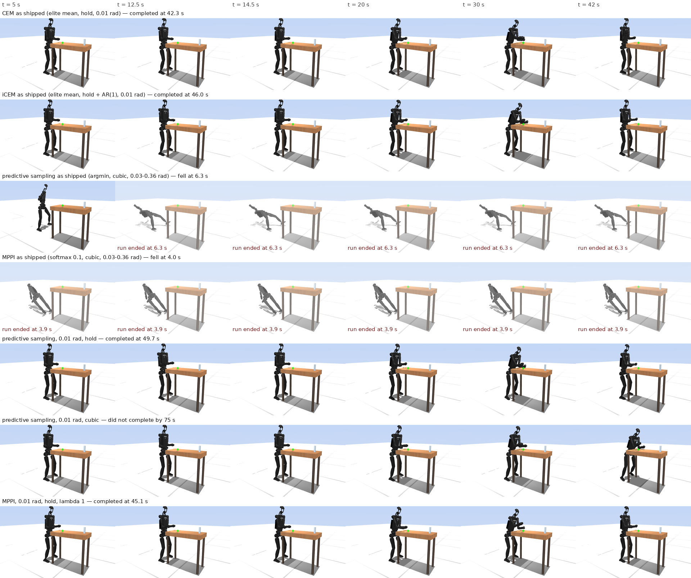
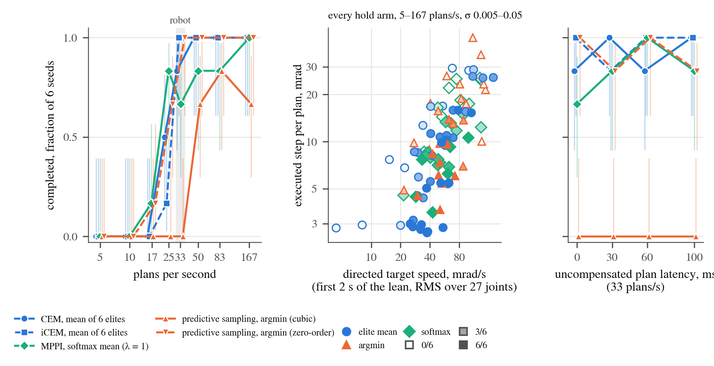

2026-09-11 to 09-13 · branch wxie/planner-ablation off icra2026 at 20f20f0e · Lean H12 Magpie, strategy 25, table face 0.985 m · headless lean_bench --gains deploy (the deploy node's joint PD on plant and planner), 6 planner threads, 20 rollouts, 1.0 s horizon · 33 plans/s unless stated · 6 seeds per arm · 1794 scored runs. Supersedes the 2026-09-10 page, which measured a different plant (§3).
At the robot's plan rate (33 plans/s) and joint gains, the shipped CEM completes the braced-lean ladder 5/6 and iCEM 6/6; the shipped predictive sampling and MPPI complete 0/6 each and fall in the stand within 10–45 s. Two of the three things that differ between the families account for that gap; the update rule does not:
sampling_exploration = 0.12 by half the actuator control range, 0.03–0.36 rad per joint. At 0.01 rad in the same units and their shipped cubic spline they still complete 0/6 and 0–1/6.Sensitivity is where CEM separates from the others. At 33 plans/s its admissible range of sampling std (cells at ≥ 4/6) spans the full tested decade, 0.005–0.05 rad, while predictive sampling with the hold and MPPI with the hold are admissible only at 0.01–0.02 rad; at 50 plans/s predictive sampling widens to 0.005–0.03 and MPPI to 0.005–0.01, at 167 plans/s both reach 0.005–0.03 and CEM's range is 0.005–0.03 (0.05 rad is 3/6 there); at 25 plans/s, below the robot's rate, CEM holds 0.01–0.03, predictive sampling 0.01–0.02 and MPPI 0.01–0.02, and 0.005 rad fails for every rule. Any elite count that selects works (k = 1, 2, 6, 10 at 5–6/6); k = 20, the mean of all samples, completes 0/6. Eight rollouts instead of twenty cost CEM three completions (2/6) and predictive sampling four (2/6); MPPI at 8 rollouts is unchanged (4/6).

The basin widens with the plan rate for every rule and is widest for the elite mean at every rate: over the twenty σ × rate cells (five σ at 25, 33, 50 and 167 plans/s, 6 seeds each), CEM is admissible in 16, predictive sampling with the hold in 12, MPPI with the hold in 10, and predictive sampling with its shipped cubic spline in 5. At 167 plans/s every update rule at 0.01 rad completes 6/6 with the hold and the cubic spline recovers to 4–6/6, so the components that matter at the robot's rate stop mattering at five times the rate; the noise scale matters at every rate (shipped predictive sampling and MPPI 0/6 at 167 plans/s as at 33, and 0.05 rad admissible for no rule but CEM at any rate). Below the robot's rate the floor is close: at 0.01 rad the hold arms complete 1–5/6 at 25 plans/s and 0–1/6 at 16.7, always by the backward fall at the lean onset, and a larger noise floor, which only the elite mean can afford, moves the floor down — CEM at 0.02 rad completes 5/6 at 16.7 plans/s and iCEM at 0.03 rad 4/6 at 10 plans/s (§Plan rate). Uncompensated plan latency up to 100 ms costs nothing at 33 plans/s; 200 ms does.
One seed of each configuration at 33 plans/s on the deploy plant, rendered from the bench's 50 Hz joint-position track (render.py, MuJoCo's offscreen renderer; the deploy gains change no geometry). The shipped predictive sampling and MPPI are on the floor within 4–6 s of the stand, before any rung has asked for anything; the cubic predictive sampling at 0.01 rad stands and leans but never seats the brace or reaches; the hold arms and CEM/iCEM run the ladder in 42–50 s. Seed 1 throughout except predictive sampling with the hold (seed 2; its seed-1 rerun fell at the lean onset, one of the run-to-run differences the 6-seed counts absorb).

lean_bench (mjpc/lean_bench.cc) runs the task's plant at 2 ms with the deploy node's KP/KV table written into the plant and the planner model, re-plans every --spp plant steps (15 = 33 plans/s, 10 = 50, 6 = 83, 3 = 167), evaluates the policy spline every plant step, and logs one row per plan. The planner rollout step is 10 ms, the horizon 1.0 s with 3 spline knots, 20 rollouts, 6 threads, on all arms. Seeds 0–5 set the sampler and a 3 mm initial perturbation; nothing else differs between seeds. An arm is one planner id plus numeric overrides (arms.py), so every row of every table is the shipped model with named numbers changed.
Outcomes per run, mutually exclusive: complete = the final stand rung held for 3 s; fell = pelvis below 0.5 m (the bench stops); collapsed = pelvis below 0.75 m or torso tilt past 60° without the stop; stalled = upright at 75 s without completing. Completion counts carry Wilson 95 % intervals; with 6 seeds, 6/6 means [0.61, 1] and 0/6 means [0, 0.39], so a one-count difference between arms is noise and a 6/6 against 0/6 is not. The dense channels are the executed step per plan (RMS change of the 27 position targets between consecutive plans), the plant cost per rung, the brace normal force, the reach error, and the CoM excursion beyond the foot edge in the first 1.2 s of the lean rung.
The earlier page found the shipped CEM at 1/6 at 33 plans/s and attributed it to the plan rate; the cause was the plant's joint gains. Lean_H12_Magpie.xml (through h1_2_modified_magpie.xml) gives every arm joint kp = 40 and the ankle roll kp = 200; the deploy node's KP[] (h12_control_node.cc, written into the planner and latency models by PatchActuators) has shoulder pitch 90, shoulder roll 60, shoulder yaw 40, elbow 90, wrists 15, ankle roll 80. KV is identical. The node's comments date the raises to 2026-08-08, 08-21 and 08-22; the XML was never updated. The RoboCasa twin and the robot are on the node's table (the plant PD comes from lowcmd kp/kd and the node patches the planner), so anything that runs the planner without the node — the mjpc GUI, lean_bench without --gains deploy, any headless scorer that loads the task XML — evaluates a plant the robot is not.
| joint | XML kp | deploy kp |
|---|---|---|
| hip yaw / pitch / roll, knee, ankle pitch, torso | 150 / 200 / 200 / 200 / 200 / 200 | same |
| ankle roll | 200 | 80 |
| shoulder pitch | 40 | 90 |
| shoulder roll | 40 | 60 |
| shoulder yaw | 40 | 40 |
| elbow | 40 | 90 |
| wrist roll / pitch / yaw | 40 | 15 |
On the XML plant at 33 plans/s: CEM 1/6, iCEM 1/6, predictive sampling at 0.01 rad 0–1/6. On the deploy plant, same seeds, same everything else: CEM 5/6, iCEM 6/6. Over the 85 (arm, seed) pairs run on both plants at 33 plans/s the executed step per plan is the same (median 9.8 mrad on both), and what changes is the plant's response at the lean onset: the CoM retreats behind the foot edge by a median 0.222 m in the first 1.2 s of the lean on the XML plant and 0.156 m on the deploy plant (smaller in 67 of 85 pairs); at the hold and 0.01 rad the counts are 12/41 against 36/41. In that 1.2 s the shoulder pitch lags its target by 0.089 rad on the XML plant against 0.062 rad on the deploy plant, and the hip pitch extends by 0.079 rad against 0.021 (24 matched runs of the four 0.01 rad hold arms, medians), which is the pelvis going back. The 2026-09-10 page's 33 Hz section, including its window on the executed step, is therefore a property of the XML plant and is withdrawn; its 167 plans/s results (all update rules complete at matched noise) hold on the deploy plant too (Table 6). The durable fix is the deploy table in the XML actuators or a gains file both the node and the XML read; until then every sim-only evaluation should state which plant it ran on.
Predictive sampling and MPPI draw per-knot noise with std sampling_exploration × ½ ctrlrange; at the shipped 0.12 that is 0.03 rad on the wrists and 0.36 rad on the hip pitch (median 0.21 rad across the 27 joints). CEM and iCEM draw with std max(elite std, std_min = 0.01) in radians. The elite std is refit every plan from the 6 elites, so it is adaptive in principle; measured before the floor is applied (the bench's cem_std_mean column, every plan of every run), it falls from the 0.12 initial value to under twice the floor within about 25 refits (0.77 s at 33 plans/s, 0.15 s at 167) and then sits at 1.3 × the floor for the rest of the run: median 1.34 ×, p99 1.8 ×, maximum over 40 s 2.0 ×, with no rise at lean onset, release or stand-back (2 s bin means 0.012–0.015 rad throughout). The ratio is the same at every floor (1.40, 1.34, 1.29, 1.28, 1.25 × for std_min 0.005, 0.01, 0.02, 0.03, 0.05) and every plan rate (1.32–1.34 × at 33–167 plans/s). Six unselected draws passed through the same floor would settle at 1.68 × (simulated), so cost selection tightens the elites by about 20 % and the floor sets the rest. The σ axis for CEM in Figures 2 and 3 is therefore std_min, and the sampled σ is 1.3 × the label. iCEM's AR(1) noise under-fills the early knots (0.71, 0.87, 0.94 σ at α = 0.7), its refit std sits at 0.8 × the floor, and the floor binds on every parameter; with white noise (α = 0) it sits at 1.22 × like CEM. With k = 20 (no selection) the refit std wanders to 1.9 × the floor and above 2 × on 47 % of plans, and the arm completes 0/6. The shipped predictive sampling moves the executed targets 70–130 mrad per plan during quiet standing and its plant cost is 600–3500 against 5–9 for every working arm; the robot is on the slab by 10–45 s. Turning sampling_exploration down to 0.01 (0.003–0.03 rad per joint, still the range-scaled convention) does not rescue either planner at 33 plans/s (0/6 and 0/6).
| arm | planner and overrides | n | completed | fell | collapsed | stalled | furthest rung, per seed | tcomplete median, s | stand step, mrad / plan | stand cost | peak brace, N | min reach err, mm |
|---|---|---|---|---|---|---|---|---|---|---|---|---|
ps | PS | 6 | 0 | 5 | 1 | 0 | lean✗ stand✗ stand✗ stand✗ stand✗ stand✗ | — | 72.6 | 635.9 | 57 | 607 |
ps_scaled01_cubic | PS, sampling_exploration=0.01 | 6 | 0 | 6 | 0 | 0 | stand✗ sb1✗ stand✗ stand✗ stand✗ stand✗ | — | 15.1 | 186.2 | 33 | 27 |
ps_raw01_cubic | PS, sampling_noise_raw=1, sampling_exploration=0.01, sampling_representation=2 | 6 | 0 | 5 | 0 | 1 | lean✗ lean✗ reach✗ lean✗ reach· reach✗ | — | 7.6 | 8.5 | 41 | 133 |
ps_raw01_zero | PS, sampling_noise_raw=1, sampling_exploration=0.01, sampling_representation=0 | 6 | 6 | 0 | 0 | 0 | final✓ final✓ final✓ final✓ final✓ final✓ | 46.6 | 6.0 | 8.6 | 138 | 34 |
mppi | MPPI | 6 | 0 | 4 | 2 | 0 | lean✗ lean✗ lean✗ stand✗ stand✗ lean✗ | — | 102.4 | 2596.6 | 79 | 2560 |
mppi_scaled01_cubic | MPPI, sampling_exploration=0.01 | 6 | 0 | 6 | 0 | 0 | stand✗ stand✗ lean✗ lean✗ stand✗ stand✗ | — | 14.1 | 147.2 | 37 | 247 |
mppi_raw01_cubic_l0.1 | MPPI, sampling_noise_raw=1, sampling_exploration=0.01, sampling_representation=2, mppi_temperature=0.1 | 6 | 0 | 5 | 0 | 1 | lean✗ reach· reach✗ lean✗ reach✗ lean✗ | — | 6.7 | 9.4 | 89 | 267 |
mppi_raw01_cubic_l1 | MPPI, sampling_noise_raw=1, sampling_exploration=0.01, sampling_representation=2, mppi_temperature=1 | 6 | 1 | 5 | 0 | 0 | final✓ lean✗ stand✗ lean✗ lean✗ reach✗ | 52.1 | 7.0 | 9.6 | 37 | 384 |
mppi_raw01_zero_l1 | MPPI, sampling_noise_raw=1, sampling_exploration=0.01, sampling_representation=0, mppi_temperature=1 | 6 | 4 | 0 | 0 | 2 | final✓ final✓ sb3· final✓ sb2· final✓ | 49.3 | 6.3 | 9.7 | 154 | 31 |
At 0.01 rad, predictive sampling completes 6/6 with a zero-order hold and 0/6 with the cubic spline it ships with. The same switch takes CEM from 5/6 to 1/6 and MPPI (λ = 1) from 4/6 to 1/6; iCEM completes 6/6 with either. The executed step per plan does not separate the two splines (settled stand, 6–12 s: predictive sampling 7.3 mrad cubic vs 3.9 hold, CEM 6.3 vs 5.6, iCEM 2.6 vs 2.7; CEM with k = 2 steps 9.9 mrad and completes 6/6), so the difference is in the shape of the executed target between plans, not its size. Logged at 500 Hz (Figure 3a), the cubic target moves within the 30 ms plan interval at 70–90 mrad/s RMS over the 27 joints — with 3 knots over 1 s the executed action lies on a curve toward a knot 0.5 s ahead — while the hold's target is constant between plans and steps only at re-plans (1.9 mrad in the stand). The within-plan motion is not undone at the next plan (correlation between the ramp and the following jump +0.01 to +0.03), so it is executed as commanded.

Under the cubic spline the failures take several forms. Predictive sampling loses one seed to the backward fall at the lean onset (CoM 0.13 → 0.28 m behind the foot edge in 1.2 s, CoP at the heel, down at 14.4 s), two seeds stay in the lean rung for 25 and 46 s without satisfying its posture tolerance and then fall, and three advance to the reach and fail there. CEM and MPPI under the cubic lose two and three seeds to the onset fall, one each in the stand, and the rest later (Figure 3b). The one hold-CEM failure is the same onset fall.
What the spline changes is how long the sampled perturbation of the executed action persists in the rollout. With a hold and 3 knots the first knot's perturbation is executed unchanged for 0.33 s of every candidate rollout, so the immediate action is what the argmin or the elite mean selects on; with the cubic and white knot noise the executed action leaves the first knot's value at once and reaches an independent draw 0.5 s later. Twenty arms at 33 plans/s and 0.01 rad, varying the spline (hold, linear, cubic), the knot count (2–6) and the knot-noise colour (iCEM's AR(1) at α = 0, 0.3, 0.7, 0.95), separate the two (Figure 4, Table 3). Predictive sampling with 6 cubic knots completes 0/6, 6 hold knots 2/6, 4 cubic knots 0/6, 5 hold knots 1/6, 4 linear knots 0/6, the 3-knot cubic 0/6, the 3-knot linear 3/6, and then 4 hold knots 5/6, 3 hold knots 6/6, 2 hold knots 5/6, 2 cubic knots (a 1 s ramp) 6/6. iCEM under the 3-knot cubic completes 6/6 because its AR(1) knot noise keeps the first knot's perturbation correlated with the later ones: with white noise and its elite memory kept it drops to 1/6, with the colored noise and no memory it stays at 6/6, and α = 0.3 gives 5/6. For each representation persistence.py draws knot perturbations, evaluates the perturbation of the executed action δu(τ) over the horizon with MJPC's own interpolation and slope rules, and reads off the lag at which its correlation with δu(0) falls below 0.8. Every arm with that lag ≤ 0.20 s completes 0–2/6 and every arm with ≥ 0.22 s completes 5–6/6, across the four planners, with the 3-knot linear (0.22 s, 3/6) on the edge. The two sides of the band fail differently: 24 of the 27 non-completions of the white-noise cubic and linear arms are falls, while 7 of the 9 non-completions of the 5- and 6-knot holds are ladders still advancing at the 75 s budget (final or stand-back rungs entered at 63–73 s, against 41–53 s for the completing arms), i.e. a planner that holds each posture within tolerance late rather than one that falls; the integral of the correlation does not order the arms (a 4-knot hold at 0.25 s completes 5/6, the 3-knot cubic at 0.28 s 0/6), so what selection needs is the perturbation still applied at ≈ 0.2 s, about seven plan intervals, not its total duration. The one exception is amplitude, not persistence: at α = 0.95 the cold-started AR(1) gives the first knot a std of 0.3 σ = 3 mrad and every seed falls during the initial stand-up at 4.4–5.0 s. The threshold is the plan interval's, not the task's. At 50 plans/s the 5-knot hold (0.20 s) completes 4/6 and the 4-knot hold 4/6 (against 1/6 and 5/6 at 33), the 4-knot linear 2/6 and the 4-knot cubic 0/6; at 167 plans/s the 4-knot cubic (0.13 s) completes 6/6, the 4-knot linear 6/6, the 4-knot hold 5/6 and the 5-knot hold 4/6, so every representation that fails at 33 plans/s passes at 167 and the step in Figure 4 moves down in persistence as the plan interval shrinks (Table 6).

| arm | planner and overrides | n | completed | fell | collapsed | stalled | furthest rung, per seed | tcomplete median, s | stand step, mrad / plan | stand cost | peak brace, N | min reach err, mm |
|---|---|---|---|---|---|---|---|---|---|---|---|---|
ps_raw01_cubic_k6 | PS, sampling_noise_raw=1, sampling_exploration=0.01, sampling_representation=2, sampling_spline_points=6 | 6 | 0 | 6 | 0 | 0 | stand✗ stand✗ stand✗ stand✗ stand✗ stand✗ | — | 9.7 | 237.1 | 24 | — |
ps_raw01_zero_k6 | PS, sampling_noise_raw=1, sampling_exploration=0.01, sampling_representation=0, sampling_spline_points=6 | 6 | 2 | 1 | 0 | 3 | sb1· lean✗ sb1· sb1· final✓ final✓ | 45.4 | 7.8 | 19.5 | 129 | 33 |
ps_raw01_cubic_k4 | PS, sampling_noise_raw=1, sampling_exploration=0.01, sampling_representation=2, sampling_spline_points=4 | 6 | 0 | 6 | 0 | 0 | stand✗ lean✗ lean✗ stand✗ lean✗ stand✗ | — | 9.2 | 56.2 | 19 | 361 |
ps_raw01_zero_k5 | PS, sampling_noise_raw=1, sampling_exploration=0.01, sampling_representation=0, sampling_spline_points=5 | 6 | 1 | 1 | 0 | 4 | final· final✓ final· final· lean✗ release· | 48.9 | 6.9 | 15.2 | 234 | 34 |
ps_raw01_linear_k4 | PS, sampling_noise_raw=1, sampling_exploration=0.01, sampling_representation=1, sampling_spline_points=4 | 6 | 0 | 5 | 0 | 1 | lean✗ reach✗ reach· stand✗ lean✗ stand✗ | — | 8.5 | 17.0 | 39 | 147 |
ps_raw01_cubic | PS, sampling_noise_raw=1, sampling_exploration=0.01, sampling_representation=2 | 6 | 0 | 5 | 0 | 1 | lean✗ lean✗ reach✗ lean✗ reach· reach✗ | — | 7.6 | 8.5 | 41 | 133 |
cem_cubic | CEM, cem_representation=2 | 6 | 1 | 4 | 0 | 1 | sb1✗ final✓ lean✗ final· lean✗ stand✗ | 71.4 | 7.8 | 8.5 | 104 | 46 |
icem_a0_cubic | iCEM, cem_representation=2, icem_alpha=0 | 6 | 1 | 5 | 0 | 0 | stand✗ lean✗ lean✗ lean✗ final✓ lean✗ | 42.0 | 6.6 | 12.2 | 39 | 362 |
mppi_raw01_cubic_l1 | MPPI, sampling_noise_raw=1, sampling_exploration=0.01, sampling_representation=2, mppi_temperature=1 | 6 | 1 | 5 | 0 | 0 | final✓ lean✗ stand✗ lean✗ lean✗ reach✗ | 52.1 | 7.0 | 9.6 | 37 | 384 |
ps_raw01_linear | PS, sampling_noise_raw=1, sampling_exploration=0.01, sampling_representation=1 | 6 | 3 | 2 | 0 | 1 | final✓ reach· final✓ sb3✗ lean✗ final✓ | 56.5 | 7.5 | 8.9 | 177 | 23 |
icem_a03_cubic | iCEM, cem_representation=2, icem_alpha=0.3 | 6 | 5 | 1 | 0 | 0 | lean✗ final✓ final✓ final✓ final✓ final✓ | 44.9 | 5.1 | 6.3 | 31 | 23 |
ps_raw01_zero_k4 | PS, sampling_noise_raw=1, sampling_exploration=0.01, sampling_representation=0, sampling_spline_points=4 | 6 | 5 | 0 | 0 | 1 | final✓ final✓ reach· final✓ final✓ final✓ | 51.9 | 6.6 | 11.0 | 195 | 31 |
icem_cubic | iCEM, cem_representation=2 | 6 | 6 | 0 | 0 | 0 | final✓ final✓ final✓ final✓ final✓ final✓ | 43.1 | 3.1 | 5.4 | 59 | 25 |
icem_keep0_cubic | iCEM, cem_representation=2, icem_elite_keep=0 | 6 | 6 | 0 | 0 | 0 | final✓ final✓ final✓ final✓ final✓ final✓ | 42.6 | 3.2 | 6.4 | 66 | 35 |
ps_raw01_zero | PS, sampling_noise_raw=1, sampling_exploration=0.01, sampling_representation=0 | 6 | 6 | 0 | 0 | 0 | final✓ final✓ final✓ final✓ final✓ final✓ | 46.6 | 6.0 | 8.6 | 138 | 34 |
cem | CEM | 6 | 5 | 1 | 0 | 0 | lean✗ final✓ final✓ final✓ final✓ final✓ | 41.6 | 6.9 | 7.0 | 50 | 47 |
icem_a0 | iCEM, icem_alpha=0 | 6 | 6 | 0 | 0 | 0 | final✓ final✓ final✓ final✓ final✓ final✓ | 48.6 | 6.0 | 7.5 | 134 | 45 |
mppi_raw01_zero_l1 | MPPI, sampling_noise_raw=1, sampling_exploration=0.01, sampling_representation=0, mppi_temperature=1 | 6 | 4 | 0 | 0 | 2 | final✓ final✓ sb3· final✓ sb2· final✓ | 49.3 | 6.3 | 9.7 | 154 | 31 |
icem | iCEM | 6 | 6 | 0 | 0 | 0 | final✓ final✓ final✓ final✓ final✓ final✓ | 44.2 | 3.0 | 7.3 | 77 | 33 |
icem_keep0 | iCEM, icem_elite_keep=0 | 6 | 6 | 0 | 0 | 0 | final✓ final✓ final✓ final✓ final✓ final✓ | 42.2 | 3.1 | 6.0 | 25 | 21 |
ps_raw01_cubic_k2 | PS, sampling_noise_raw=1, sampling_exploration=0.01, sampling_representation=2, sampling_spline_points=2 | 6 | 6 | 0 | 0 | 0 | final✓ final✓ final✓ final✓ final✓ final✓ | 44.3 | 5.2 | 5.4 | 23 | 31 |
ps_raw01_zero_k2 | PS, sampling_noise_raw=1, sampling_exploration=0.01, sampling_representation=0, sampling_spline_points=2 | 6 | 5 | 1 | 0 | 0 | final✓ final✓ final✓ final✓ final✓ sb1✗ | 46.6 | 5.0 | 7.5 | 160 | 26 |
icem_a095_cubic | iCEM, cem_representation=2, icem_alpha=0.95 | 6 | 0 | 6 | 0 | 0 | stand✗ stand✗ stand✗ stand✗ stand✗ stand✗ | — | 1.6 | 224.2 | 16 | — |
At the hold and 0.01 rad: argmin over 20 samples (predictive sampling, and CEM with k = 1) 5–6/6, mean of the k best 5–6/6 for k = 1, 2, 6, 10 and 0/6 for k = 20, softmax mean 6/6 at λ = 0.1 (an argmin in practice, effective sample size 1), 4/6 at λ = 1 and 5/6 at λ = 10. The softmax at λ = 1 differs from the others in the task channels: its two failures are stalls in the stand-back rungs rather than falls, it rests on the table more (fraction of the reach spent on the trunk contact 0.43–0.63 against 0.00–0.31 for CEM), and its brace peak is 88–211 N against 2–120 N. Elite averaging halves CEM's executed step relative to the argmin (5.6 vs 9.5–9.9 mrad per plan in the stand) and iCEM's elite memory and AR(1) start halve it again (2.7 mrad), but at this plant and rate the step size within 3–10 mrad does not predict completion.
| arm | planner and overrides | n | completed | fell | collapsed | stalled | furthest rung, per seed | tcomplete median, s | stand step, mrad / plan | stand cost | peak brace, N | min reach err, mm |
|---|---|---|---|---|---|---|---|---|---|---|---|---|
cem_ne1 | CEM, n_elite=1 | 6 | 5 | 1 | 0 | 0 | final✓ final✓ final✓ final✓ final✓ lean✗ | 46.4 | 9.8 | 9.1 | 129 | 18 |
cem_ne2 | CEM, n_elite=2 | 6 | 6 | 0 | 0 | 0 | final✓ final✓ final✓ final✓ final✓ final✓ | 44.1 | 10.6 | 9.1 | 144 | 19 |
cem | CEM | 6 | 5 | 1 | 0 | 0 | lean✗ final✓ final✓ final✓ final✓ final✓ | 41.6 | 6.9 | 7.0 | 50 | 47 |
cem_ne10 | CEM, n_elite=10 | 6 | 5 | 1 | 0 | 0 | lean✗ final✓ final✓ final✓ final✓ final✓ | 42.8 | 5.7 | 12.2 | 39 | 37 |
cem_ne20 | CEM, n_elite=20 | 6 | 0 | 6 | 0 | 0 | stand✗ stand✗ stand✗ stand✗ lean✗ lean✗ | — | 11.8 | 755.4 | 55 | 283 |
mppi_raw01_zero_l0.1 | MPPI, sampling_noise_raw=1, sampling_exploration=0.01, sampling_representation=0, mppi_temperature=0.1 | 6 | 6 | 0 | 0 | 0 | final✓ final✓ final✓ final✓ final✓ final✓ | 48.3 | 6.1 | 9.1 | 114 | 43 |
mppi_raw01_zero_l1 | MPPI, sampling_noise_raw=1, sampling_exploration=0.01, sampling_representation=0, mppi_temperature=1 | 6 | 4 | 0 | 0 | 2 | final✓ final✓ sb3· final✓ sb2· final✓ | 49.3 | 6.3 | 9.7 | 154 | 31 |
mppi_raw01_zero_l10 | MPPI, sampling_noise_raw=1, sampling_exploration=0.01, sampling_representation=0, mppi_temperature=10 | 6 | 5 | 1 | 0 | 0 | final✓ final✓ lean✗ final✓ final✓ final✓ | 45.0 | 6.8 | 7.5 | 130 | 31 |
icem | iCEM | 6 | 6 | 0 | 0 | 0 | final✓ final✓ final✓ final✓ final✓ final✓ | 44.2 | 3.0 | 7.3 | 77 | 33 |
How well, where every rule completes: the ladder's duration is set by its timers (lean 12 s, stand-back rungs 2 s each) except in the reach and the release, and there the rules differ. CEM reaches the target in 3.6–3.7 s and releases in 2.7–2.9 s, iCEM 4.3 and 3.1, predictive sampling 5.8 and 2.8, MPPI (λ = 1) 6.8 and 4.9, which is the 42 s against 49 s in the completion time. CEM with k = 6 also leans least on the table (brace peak 50 N, 2 % of the reach spent on the trunk contact), where CEM with k = 2, predictive sampling and MPPI at λ = 1 rest on it (138–154 N, 38–47 %); the light touch goes with the six-elite average rather than with the elite mean as such, and MPPI's stalls in the stand-back rungs come after the heaviest rest of the set.
| arm | completed | tcomplete, s | lean, s | reach, s | release, s | back 1, s | back 2, s | back 3, s | back 4, s | brace peak, N | reach on the trunk, fraction | reach error, mm |
|---|---|---|---|---|---|---|---|---|---|---|---|---|
| iCEM | 6/6 | 44.2 | 12.1 | 4.3 | 3.1 | 3.1 | 2.0 | 2.0 | 2.0 | 77 | 0.20 | 33 |
| CEM, k = 6 | 5/6 | 41.6 | 12.0 | 3.7 | 2.7 | 2.0 | 2.0 | 2.0 | 2.0 | 50 | 0.02 | 47 |
| CEM, k = 2 | 6/6 | 44.1 | 12.2 | 3.6 | 2.9 | 2.7 | 2.3 | 2.0 | 2.1 | 144 | 0.38 | 19 |
| PS, hold | 6/6 | 46.6 | 12.2 | 5.8 | 2.8 | 3.6 | 2.0 | 2.0 | 2.0 | 138 | 0.43 | 34 |
| MPPI, λ = 0.1 | 6/6 | 48.3 | 12.7 | 4.1 | 4.4 | 2.4 | 2.1 | 2.0 | 2.2 | 114 | 0.27 | 43 |
| MPPI, λ = 1 | 4/6 | 49.3 | 12.3 | 6.8 | 4.9 | 3.1 | 2.2 | 2.2 | 2.3 | 154 | 0.47 | 31 |
| MPPI, λ = 10 | 5/6 | 45.0 | 12.2 | 5.4 | 2.5 | 2.7 | 2.1 | 2.3 | 2.0 | 130 | 0.36 | 31 |
| arm | planner and overrides | n | completed | fell | collapsed | stalled | furthest rung, per seed | tcomplete median, s | stand step, mrad / plan | stand cost | peak brace, N | min reach err, mm |
|---|---|---|---|---|---|---|---|---|---|---|---|---|
cem_stdmin005 | CEM, std_min=0.005 | 6 | 5 | 1 | 0 | 0 | stand✗ final✓ final✓ final✓ final✓ final✓ | 42.5 | 4.8 | 22.5 | 51 | 32 |
cem | CEM | 6 | 5 | 1 | 0 | 0 | lean✗ final✓ final✓ final✓ final✓ final✓ | 41.6 | 6.9 | 7.0 | 50 | 47 |
cem_stdmin02 | CEM, std_min=0.02 | 6 | 5 | 1 | 0 | 0 | final✓ lean✗ final✓ final✓ final✓ final✓ | 44.3 | 11.9 | 9.1 | 222 | 21 |
cem_stdmin03 | CEM, std_min=0.03 | 6 | 6 | 0 | 0 | 0 | final✓ final✓ final✓ final✓ final✓ final✓ | 44.8 | 16.9 | 10.9 | 268 | 19 |
cem_stdmin05 | CEM, std_min=0.05 | 6 | 4 | 1 | 0 | 1 | final✓ final✓ final✓ sb3· lean✗ final✓ | 49.4 | 27.4 | 27.0 | 221 | 21 |
ps_raw005_zero | PS, sampling_noise_raw=1, sampling_exploration=0.005, sampling_representation=0 | 6 | 2 | 4 | 0 | 0 | stand✗ stand✗ final✓ stand✗ final✓ lean✗ | 45.3 | 4.6 | 132.1 | 21 | 42 |
ps_raw01_zero | PS, sampling_noise_raw=1, sampling_exploration=0.01, sampling_representation=0 | 6 | 6 | 0 | 0 | 0 | final✓ final✓ final✓ final✓ final✓ final✓ | 46.6 | 6.0 | 8.6 | 138 | 34 |
ps_raw02_zero | PS, sampling_noise_raw=1, sampling_exploration=0.02, sampling_representation=0 | 6 | 4 | 2 | 0 | 0 | final✓ final✓ final✓ sb2✗ sb2✗ final✓ | 49.9 | 7.3 | 17.5 | 267 | 30 |
ps_raw03_zero | PS, sampling_noise_raw=1, sampling_exploration=0.03, sampling_representation=0 | 6 | 1 | 2 | 0 | 3 | reach✗ sb2· reach· final✓ reach✗ reach· | 56.8 | 7.5 | 24.6 | 282 | 68 |
ps_raw05_zero | PS, sampling_noise_raw=1, sampling_exploration=0.05, sampling_representation=0 | 6 | 0 | 4 | 0 | 2 | reach✗ lean✗ reach✗ reach· lean✗ reach· | — | 10.2 | 49.7 | 264 | 38 |
mppi_raw005_zero_l1 | MPPI, sampling_noise_raw=1, sampling_exploration=0.005, sampling_representation=0, mppi_temperature=1 | 6 | 2 | 4 | 0 | 0 | final✓ stand✗ sb1✗ final✓ lean✗ lean✗ | 42.5 | 4.2 | 17.5 | 27 | 47 |
mppi_raw01_zero_l1 | MPPI, sampling_noise_raw=1, sampling_exploration=0.01, sampling_representation=0, mppi_temperature=1 | 6 | 4 | 0 | 0 | 2 | final✓ final✓ sb3· final✓ sb2· final✓ | 49.3 | 6.3 | 9.7 | 154 | 31 |
mppi_raw02_zero_l1 | MPPI, sampling_noise_raw=1, sampling_exploration=0.02, sampling_representation=0, mppi_temperature=1 | 6 | 4 | 2 | 0 | 0 | final✓ final✓ sb2✗ final✓ final✓ release✗ | 48.3 | 10.4 | 16.5 | 238 | 10 |
mppi_raw03_zero_l1 | MPPI, sampling_noise_raw=1, sampling_exploration=0.03, sampling_representation=0, mppi_temperature=1 | 6 | 1 | 3 | 0 | 2 | final✓ sb2✗ lean✗ sb3· reach· reach✗ | 55.9 | 13.3 | 28.0 | 285 | 24 |
mppi_raw05_zero_l1 | MPPI, sampling_noise_raw=1, sampling_exploration=0.05, sampling_representation=0, mppi_temperature=1 | 6 | 0 | 5 | 0 | 1 | reach✗ reach✗ lean✗ reach· lean✗ lean✗ | — | 15.1 | 57.4 | 247 | 156 |
Strategy 25's 3 × 3 target grid (depth offset target_col_x −0.10, 0, +0.10 m × lateral column target_col_y 0, 0.12, 0.24 m, the same knobs the hardware commandability runs use) for the four hold planners at 0.01 rad and 33 plans/s, 3 seeds per cell: CEM completes 23/27, iCEM 22/27, predictive sampling 21/27 and MPPI (λ = 1) 23/27, with no cell below 1/3 and the nearest-depth, centre-line cell (−0.10 m, column A) the hardest for CEM and iCEM (1/3 each). At the robot's rate the four rules are interchangeable across commanded targets at three seeds; the difference between them is in the sensitivity basin above, not in which targets can be reached. The reach-error channel is only meaningful on column A (7–62 mm at closest approach), since the bench's target-error column is measured against the unshifted target body.
| planner | −0.10 A | −0.10 B | −0.10 C | 0 A | 0 B | 0 C | +0.10 A | +0.10 B | +0.10 C | total |
|---|---|---|---|---|---|---|---|---|---|---|
| CEM | 1/3 | 3/3 | 2/3 | 2/3 | 3/3 | 3/3 | 3/3 | 3/3 | 3/3 | 23/27 |
| iCEM | 1/3 | 3/3 | 2/3 | 2/3 | 3/3 | 2/3 | 3/3 | 3/3 | 3/3 | 22/27 |
| PS, hold | 2/3 | 2/3 | 3/3 | 3/3 | 2/3 | 3/3 | 1/3 | 3/3 | 2/3 | 21/27 |
| MPPI, hold, λ = 1 | 3/3 | 2/3 | 3/3 | 2/3 | 3/3 | 3/3 | 2/3 | 3/3 | 2/3 | 23/27 |
Of the five update-rule × spline combinations in Figure 5a, the four with the hold complete 5–6/6 at 50, 83 and 167 plans/s; at 33 plans/s MPPI (λ = 1) drops to 4/6 with two stalls, CEM's one failure is the lean-onset fall, and the cubic predictive sampling completes 0/6. Below the robot's rate the floor is close: at 25 plans/s the hold arms complete 1–5/6 (iCEM 1/6, CEM 3/6, predictive sampling 4/6, MPPI 5/6), at 16.7 plans/s 0–1/6, at 10 and 5 plans/s 0/6. Every low-rate failure is the backward fall at the lean onset at t = 14–15 s; the 12 s of quiet standing before it survives at 5 plans/s on every seed, because the joint PD (kp 150–200 on the legs, at 500 Hz on the plant) holds a posture on its own and the planner only has to move the setpoints. The lean onset is the one event in the ladder where the setpoints must move quickly, and it sets the floor.
How quickly is measurable. The executed step per plan in the lean rung is set by the noise and the update rule and does not change with the rate (CEM 5.4–7.7 mrad from 167 down to 5 plans/s, iCEM 2.6–2.9, predictive sampling with the hold 5.4–9.8), so the speed at which the planner can move the executed target is step × rate: CEM 900 mrad/s at 167 plans/s, 186 at 33, 149 at 25, 68 at 10. Completion falls off below about 150–200 mrad/s across the arms (Figure 5b), and iCEM, whose colored noise and elite memory give it the smallest step (2.7 mrad, 95 mrad/s at 33 plans/s), is the first to go at 25 plans/s (73 mrad/s, 1/6) while MPPI with the largest step (8 mrad, 203 mrad/s) is the last (5/6). A larger step lowers the floor, and only the elite mean can afford one. With σ raised to 0.02 rad, CEM completes 5/6 at 25 plans/s and 5/6 at 16.7 (against 3/6 and 0/6 at 0.01); iCEM with its floor at 0.03 rad completes 5/6 at 25, 4/6 at 16.7 and 4/6 at 10 plans/s (against 1/6, 0/6, 0/6). Predictive sampling at 0.02 rad gains at 25 plans/s (5/6) and little below it (2/6 at 16.7, 0/6 at 10), and at 0.03 rad it loses at every rate; MPPI at 0.02 rad is unchanged at 25 (4/6) and 0/6 below. The larger noise raises the directed target speed for every rule (CEM 30 → 59 mrad/s at 25 plans/s, predictive sampling 39 → 63) but also the random part of the step (predictive sampling 8.9 → 13.9 mrad per plan, and the CoM retreat at the onset deepens with it, −0.14 → −0.18 m at 0.03 rad), and the argmin and the softmax pay for that where the mean of six elites, whose random step is σ/√6, and iCEM's memory-and-colored-noise average do not. iCEM's low-rate window is the widest of all: with σ at 0.02, 0.03 and 0.05 rad it completes 6/6, 5/6 and 6/6 at 25 plans/s, 5/6, 4/6 and 6/6 at 16.7, and 0/6, 4/6 and 4/6 at 10. Fewer elites help for the same reason at low rates (a bigger directed step per plan): CEM at 0.02 rad with k = 2 completes 5/6, 6/6 and 3/6 at 25, 16.7 and 10 plans/s against 5/6, 5/6 and 1/6 with k = 6 and 3/6, 2/6 and 0/6 with k = 10. Figure 5b puts every hold arm at every rate and noise on the two axes: the arms that complete sit in a window of directed speed above 30–40 mrad/s and executed step below 15–20 mrad, and the elite-mean arms are the ones that can move along the speed axis without leaving the window.
Latency is a different quantity from rate, and the task tolerates three plan intervals of it. With lean_bench --latency_steps every plan is computed from the plant state L steps in the past and executed now, an uncompensated compute or transport delay (the deploy node predicts the state forward before planning, so the robot sits between this and zero). At 33 plans/s with 30, 60 and 100 ms of delay the hold arms complete 5–6/6 at every delay (CEM 6, 5, 6; iCEM 5, 6, 6; predictive sampling 5, 6, 5; MPPI 5, 6, 5 of 6) and the cubic predictive sampling stays at 0/6 (Figure 5c). At 200 ms the hold arms drop to 1–4/6 (CEM 2, iCEM 4, predictive sampling 1, MPPI 0) and at 300 ms every arm is 0/6, so the latency the task tolerates without compensation is 100–200 ms, the same 0.2 s that Figure 4 gives for the persistence the sampled perturbation needs and two thirds of the 0.33 s the hold's first knot covers. With the deploy node's compensation emulated (--latency_compensate 1: the stale snapshot is rolled forward under the current policy on a scratch model and the plan is made from the predicted state) the tolerance extends by one step of the same size: at 200 ms CEM 6/6, iCEM 6/6, MPPI 6/6, predictive sampling 5/6; at 300 ms CEM 5/6, MPPI 4/6, predictive sampling 3/6, iCEM 1/6; at 500 ms 0/6 for every arm. A plan that is 100 ms stale still moves the target 33 times a second along a spline that its rollout predicted through the delay; a plan interval of 100 ms moves the target ten times a second, and that is what the onset does not survive.

| arm | 33 plans/s | 50 | 83 | 167 |
|---|---|---|---|---|
cem | 5/6 (lean@15s) | 6/6 | 6/6 | 6/6 |
icem | 6/6 | 6/6 | 6/6 | 6/6 |
cem_cubic | 1/6 (sb1@37s, lean@15s, final@75s, lean@14s, stand@7s) | 3/6 (reach@33s, lean@14s, lean@14s) | — | 6/6 |
icem_cubic | 6/6 | 6/6 | — | 4/6 (stand@5s, stand@6s) |
ps | 0/6 (lean@75s, stand@4s, stand@10s, stand@5s, stand@5s, stand@8s) | — | — | 0/6 (lean@63s, lean@75s, lean@75s, lean@75s, lean@75s, lean@75s) |
ps_scaled01_cubic | 0/6 (stand@6s, sb1@52s, stand@14s, stand@5s, stand@6s, stand@6s) | 1/6 (stand@9s, lean@15s, reach@61s, lean@75s, stand@11s) | — | 6/6 |
ps_raw01_cubic | 0/6 (lean@58s, lean@14s, reach@30s, lean@38s, reach@75s, reach@38s) | 4/6 (sb2@75s, reach@58s) | 5/6 (lean@18s) | 4/6 (sb2@47s, sb3@39s) |
ps_raw01_zero | 6/6 | 6/6 | 6/6 | 6/6 |
mppi | 0/6 (lean@75s, lean@61s, lean@75s, stand@5s, stand@26s, lean@57s) | — | — | 0/6 (lean@75s, lean@24s, lean@75s, reach@75s, lean@33s, lean@75s) |
mppi_scaled01_cubic | 0/6 (stand@8s, stand@5s, lean@31s, lean@14s, stand@9s, stand@6s) | 1/6 (reach@75s, stand@12s, sb2@40s, lean@24s, lean@15s) | — | 5/6 (sb1@37s) |
mppi_raw01_cubic_l0.1 | 0/6 (lean@23s, reach@75s, reach@38s, lean@14s, reach@45s, lean@15s) | 3/6 (reach@75s, lean@75s, sb1@70s) | — | 5/6 (sb1@35s) |
mppi_raw01_cubic_l1 | 1/6 (lean@15s, stand@14s, lean@15s, lean@15s, reach@33s) | 4/6 (lean@15s, reach@75s) | — | 2/6 (sb1@36s, sb1@34s, sb1@35s, sb1@35s) |
mppi_raw01_zero_l1 | 4/6 (sb3@75s, sb2@75s) | 5/6 (sb1@36s) | 5/6 (release@34s) | 6/6 |
The executed step per plan, which sorted the arms on the XML plant, does not on the deploy plant: between 3 and 25 mrad per plan in the lean rung the completing and the failing arms overlap at every rate (the cubic arms fail at the same step as the hold arms that complete), and only the shipped-noise arms at 40–130 mrad separate (paper_figs/fig_window_all). The step is a symptom of the noise scale, not the mechanism of the spline or rate failures; the step times the rate, the target speed, is.
Horizon, budget and rollout resolution at 33 plans/s: the shipped configuration is close to minimal in every direction but the noise. Halving the horizon to 0.5 s completes 0/6 for CEM and for predictive sampling with the hold (at 167 plans/s on the XML plant 0.5 s was enough), 0.3 s 0/6, and 2.0 s 5/6 for CEM; four rollouts instead of twenty complete 2/6 (CEM, k = 1), 0/6 (predictive sampling) and 1/6 (MPPI), and eight complete 2/6, 2/6 and 4/6 (Figure 2); a 20 ms rollout step instead of 10 ms completes 3/6 (CEM) and 1/6 (predictive sampling). At 33 plans/s the planner needs the full 1 s of lookahead, the 20 rollouts and the 10 ms rollout step it ships with, 20 × 100 = 2000 rollout steps per plan, 66 000 per second. With the initial perturbation raised from the bench's 3 mm to 20 mm nothing changes (CEM 6/6, iCEM 6/6, MPPI 6/6, predictive sampling with the hold 5/6, cubic 1/6).
Model mismatch does change things, and it sorts the rules. lean_bench --plant_kp_scale and --plant_mass_scale alter the plant after the planner has taken its copy, so the planner plans on a model that is wrong by that factor. Halving every joint kp on the plant is a plant failure, not a planner comparison: every arm falls during the stand-up at 5–6 s with a stand cost of 220–300 (the XML plant's arm kp 40 was 0.44× the deploy table, which is the same territory). Doubling the plant's kp, so the planner underestimates the stiffness it is driving 2×, costs CEM nothing (6/6), iCEM two seeds (4/6), predictive sampling three (3/6) and MPPI four (2/6). A plant 10 % heavier than the planner's model costs CEM three seeds (3/6), iCEM four (2/6), MPPI five (1/6) and predictive sampling all six (0/6), with the failures spread over the lean, the reach and the stand-back rungs rather than at one event; 25 % heavier defeats every rule (0–3/6). Without gravity feedforward the joint PD carries the model error as a posture sag the planner did not predict, so mass is the model parameter this controller is most exposed to, and the stiffness overestimate is the one it absorbs — with the elite mean absorbing both better than the argmin or the softmax.
This is why 33 plans/s is enough here and not for locomotion. Whole-body MPC for walking (the MuJoCo-based MPPI and iLQR controllers on quadrupeds and the H1 that run at 50–100 plans/s over a 300 Hz TV-LQR or joint PD) has to re-decide a contact set every 0.3 s of stance and stabilize an underactuated phase whose time constant is the pendulum's, √(l/g) ≈ 0.3 s, so the plan itself has to turn over many times per stance. The braced lean has a fixed contact set (double support, then a tripod with the forearm), a posture that the joint PD holds between plans, and a required setpoint speed of 0.15–0.3 rad/s that a sampling planner reaches with 5–8 mrad steps at 33 plans/s. The planner here is a setpoint optimizer over a plant the joint PD stabilizes, and the plan rate it needs is set by how fast the setpoints have to move, which the lean onset sets at 25–33 plans/s for 0.01 rad of noise.
lean.cc (the compiled kDescentTargetRampSeconds is declared and unused), which is Allen's file.--gravity_ff 0; whether a support-aware feedforward or an online mass estimate closes that gap is the sim-to-real question this bench can now ask (--plant_mass_scale 1.1 with the feedforward on, once it exists for the lean).--gains deploy on every bench run and the plant named on every sim-only result.mjpc/lean_bench.cc (--gains deploy, --log_hz), mjpc/agent.cc (agent_allocate_active_only), mjpc/planners/{sampling,mppi,cross_entropy,icem}/planner.cc (sampling_noise_raw, cem_representation, cem_variance_fixed, cem_include_nominal), mjpc/tasks/humanoid_bench/lean/Lean_H12_Magpie.xml (knob block before the first residual_ numeric).studies/planner_ablation/{arms,sweep,analyze,paper_figs,persistence,render,report,tables,tables_rate,tables_rungs,make_page,publish_prep}.py, score_rates.sh, campaign3.sh–campaign15.sh (the order the deploy-plant waves ran in), HANDOFF.md (working notes), page_body_xml.html (the withdrawn XML-plant page's prose).studies/planner_ablation/runs/gains_spp{15,10,6,3}/ — per-run metric CSV and state track at one row per plan, log, results.jsonl; runs/floor_spp{20,30,50,100}/ (5–25 plans/s), runs/lat_spp15_l{15,30,50,100,150,250}/ (latency), runs/latc_spp15_l{100,150,250}/ (compensated), runs/perturb_spp15_p02/, runs/mismatch_spp15_{kp0.5,kp2.0,m1.1,m1.25}/, runs/grid_spp15/ (the 3 × 3 target grid), runs/video_spp15/ (the rendered runs, with qpos tracks), runs/probe500/ the 500 Hz pair; scored: runs/summary_deploy_spp{15,10,6,3}.json and runs/summary_{floor,lat,perturb,mismatch}_*.json. Regenerate with ./score_rates.sh && ./paper_figs.py && ./make_page.py --summary runs/summary_deploy_spp15.json --out ../../docs/lean/20260911-planner_ablation.html --title "...". The XML-plant runs are under runs/wave*, runs/rate_spp*, scored by ./score_rates.sh xml.studies/planner_ablation/paper_figs/fig_{ladder,basin,persist,floor2,spline,rate}.pdf (IEEE column width, 300 dpi PNG alongside). Renders: docs/lean/media/planner_ablation/vid_*.mp4 and fig_frames.png (render.py).build_cmake/bin/lean_bench --task "Lean H12 Magpie" --strategy 25 --seed 0 --total_time 75 --threads 6 --spp 15 --gains deploy --log_hz 33.3 --numeric agent_allocate_active_only=1 --numeric agent_planner=0 --numeric sampling_noise_raw=1 --numeric sampling_exploration=0.01 --numeric sampling_representation=0 --out r.csv --state_out r.state.csv